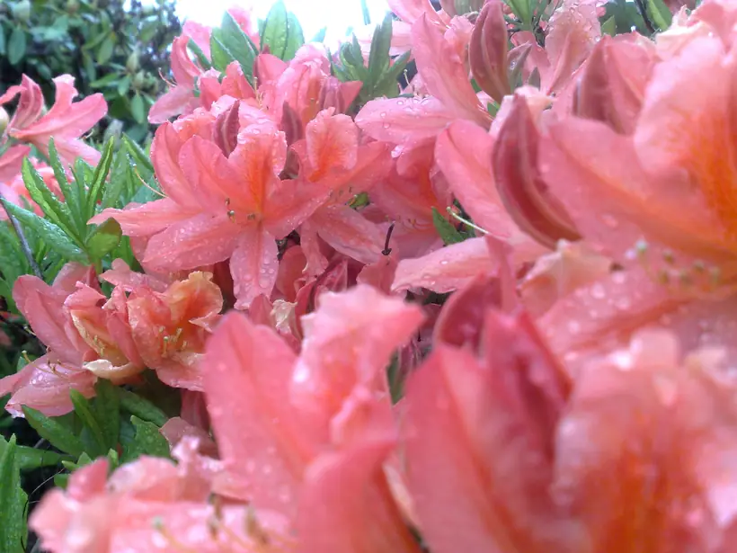

Listy, rekomendacje
Listy i opinie od osób, z którymi pracowałam: o sesjach, rysunkach aury, zabiegach i spotkaniach. Dziękuję za każde słowo.
Rozmowa
Moniko, jeszcze zanim doszło do spotkania na sesji.. już przy pierwszym telefonie do ciebie z zapytaniem co i jak, zadziało się cos wyjątkowego. Po zwyczajnej rozmowie z tobą poczułam powiew świeżości, lekkość. Tak jakby zabrano mi jakieś obciążenia. Wiem, ze to nie była jeszcze sesja, ale dziękuję ci bardzo, bo poczułam się znacznie lepiej. Dlatego z chęcią i radością wchodzę w nasze spotkania dalej.
Sesje, Rysunki Aury, spotkania
Spotkanie z Moniką było ważnym wydarzeniem w moim życiu. Jestem osobą, którą ludzie pracujący z energiami określiliby mianem sensytywnej. Z roku na rok coraz wyraźniej czuję aury ludzi, zwierząt i roślin. Widzę je w postaci światła, a częściej odczuwam jako rodzaj wibracji. Doświadczam również „energetycznych” spotkań z rozmaitymi trudnymi do zdefiniowania istotami. Niekiedy miewam prekognicje. Monikę zobaczyłam po raz pierwszy na kanale Gaja TV i po prostu zakochałam się w jej energii. Była świetlista, kojąca i łagodna jak żadna inna z napotkanych dotąd. Natychmiast postanowiłam nawiązać kontakt z gościem pani Doroty. Bez specjalnego celu. Po prostu pragnęłam znaleźć się w polu oddziaływania najdelikatniejszej i najpiękniejszej energii, jaką dane mi było poczuć. Samo słuchanie Moniki wyciszyło mnie i rozświetliło wewnętrznie. Podczas pisania pierwszej wiadomości na adres Galaktycznej Przystani Zdrowia miało miejsce coś naprawdę niezwykłego. W chwili wysłania maila po moim pokoju rozeszła się potężna fala energii. Monikę odbieram jako uosobienie łagodności, światła i miłości, do którego zawsze dobrze się zbliżyć, by nie dać zgasnąć wewnętrznemu światłu i przebudzić miłość do świata we własnym sercu.
Rysunek Aury
Kochana Moniko, dziękuje że jesteś, tu i teraz, z nami w tym samym czasie. Dziękuje za piękne malunki aury, które tyle radości, miłości, jasności, wiary dały oraz poznanie samej siebie. Jaki byłby ten świat bez Ciebie???? Ubogi…. Miłością i światłem jesteś dla świata Dziękuje Małgosia Uerlich-terapeuta i czytający z Akasha Chronik.
Masaż (kiedyś też był w ofercie)
Cześć 🙂 Moniko, jeszcze raz dziękuję za masaż, za poruszenie pięknych energii, za nowe doświadczenie siebie w Twojej przestrzeni. Z wdzięcznością
Rysunek Aury
Co roku w Wielkanoc zamawiam portret aury u Moniki. W ten czas działy się znaczące zmiany w moim życiu. Warto jest wiedzieć jaki stan jest aktualny i wesprzeć to do co dotychczas osiągnęliśmy. Udało się wiele. W ciągu 2 lat zmieniłam pracę na powołanie. W styczniu zaczynam oficjalnie jako: Clinic Coach Trener Biznesowy i za rok dojdzie wiedza z mojego aktualnego Studium: ISR Pozdrawiam Moniko i dziękuję Dziękuję Tobie i wszystkim za wsparcie. Ty i inni jesteście częścią mojego sukcesu. Merci [IMG https://www.facebook.com/images/emoji.php/v6/f7f/1/16/1f60a.png]
Rysunek Aury
Taki tekst otrzymałam od Sylwii - bardzo dziękuję <3. Przy tej okazji życzę każdemu odwagi w sercu, by móc skonfrontować się ze swoim wnętrzem. To uzdrawia i wyzwala naszą moc. „Siły duchowe i fizyczne - świat realny tylko i wyłącznie każdego z nas”. 9 lat temu moje życie zmieniło się znacząco kilka razy. Po raz pierwszy gdy dowiedziałam się, że mój syn wydawałoby się praktycznie zdrowe dziecko ma autyzm. Pod koniec tamtego 2006 roku chcąc wyleczyć się ze swoich uciążliwych dolegliwości spotkałam lekarkę, która pomogła mi odzyskać zdrowie a mój syn mimo tego, że nadal ma autyzm po przejściu na dietę od 9 lat nie choruje na żadne inne dolegliwości. Wtedy też na dobre wkroczyłam na ścieżkę nie tylko rozwoju i zdrowia fizycznego ale i zmian duchowych. To od mojej lekarki dowiedziałam się, jakie widzi wokół mnie kolory aury. To ona uświadamiała mi, że dieta to jedno ale,że powinnam się dalej kierować również w kierunku podtrzymywania zdrowia i sił psychicznych. To ona jako jedna z wielu otwarcie poleca do wspomagania leczenia chorób działalność jednego z bioenergoterapeutów. Takie były moje początki drogi dochodzenia do zdrowia, rozwoju psychicznego i umysłowego. Dzisiaj piszę krótki tekst dla Moniki o tym jak według mnie działa rozmowa z nią i jej rysunki na mnie. PODKREŚLAM WEDŁUG MNIE. Jesteśmy dla siebie najważniejszym światem poza ukochanym partnerem lub partnerką, dzieckiem, rodziną czy przyjaciółmi. Spotkałam Monikę w 2014 w lutym. I tu moje pełne zdumienie, gdy sprawdziłam to na poprzednim rysunku ponieważ myślałam, że przynajmniej upłynęły 3 lata. Narysowała mnie wtedy w różnych ciekawych kolorach, lecz całkowicie przekreśloną. I właśnie takich słów użyła omawiając mój rysunek. Ja nie chciałam tego przyjąć do wiadomości i bardziej skłaniałam się ku myśleniu, że przypomina mi to przekreślenie, bardziej pasy bezpieczeństwa. A jednak to była prawda. Przekreślałam siebie. Od momentu otrzymania pierwszego rysunku powiesiłam go na ścianie w pokoju, w którym spałam. Często na niego patrzyłam. Myślałam nad słowami Moniki. Czy i z jakich powodów może mieć rację? Z okazji Andrzejek w 2015 roku poprosiłam ją o nowy rysunek. Powiedziałam jej podczas spotkania, że uważam, że poprzedni działał, wpływał na mnie. Nie ważne, czy moją intencją było o nim pamiętać i zwracać na niego uwagę, czy jak określają inni ma on swoją energię, którą emanuje. Pozwoliłam sobie na to i już. Różne drogi prowadzą do celu. Dla mnie i na mnie działał. Wszystko co się wydarzyło od 2014 roku do teraz wydawało mi się miejscami trudne, ciężkie i rozciągnięte w czasie jakby to nie trwało kilkanaście miesięcy, ale wiele, wiele lat. Jednak drugi rysunek pokazał mi OBRAZOWO, że to co czuję, jakie podejmuję działania, wyzwania, widać także na poziomie energetycznym, który widzi Monika. Polecam poproście o możliwość nagrania sobie tego co mówi Monika, jeśli spotkacie się z nią osobiście. Odsłuchuję jej opis rysunku jak swego rodzaju ćwiczenie terapeutyczne i myślę nad tym co widzę na oryginalnym obrazku wiszącym na ścianie lub przechowywanym w telefonie. Na dodatek nadal podtrzymuję swoje przemyślenia z pierwszego rysunku, że pomimo, że rysunki pokazują bardziej „energię psychiczną” na tym poziomie współgra to z energią i zdrowiem cielesnym.
Masaże (kiedyś też były w ofercie)
Dałaś mi tyle miłości Moniś, dziękuję za cudowny masaż:)
Zabiegi
28.maja.2015 Moniko, aby móc wyrazić moja wdzięczność za to jak pomogłaś mnie i mojemu synowi nie wystarcza słowa i piękne obrazki. Nie ma nic co może ogarnąć te uczucia. Pierwszy raz słyszałam jak mój syn się śmieje, robi żarty i nie kłóci się ze mną. Jest to Twoja zasługa, a jesteśmy w trakcie sesji oczyszczających u Ciebie. Jeszcze się nie zakończyło. Widzę teraz jak mój syn cierpiał i jak ciężko miał. Ciągle zmęczony, apatyczny, nieobecny i rozdrażniony. Jest spokojniejszy, zwraca trochę na siebie uwagę, śmiał się i żartował. Jesteś czarodziejka. Cudowna kobieta i uzdrowicielka. Akasha Chronik to potwierdziła, potwierdziła Twoja fachowość i wiedzę. Moja córcię tez podeślę. Zapraszam wszystkich rodziców, którzy chcą pomoc dzieciom. Tutaj jest właściwy adres. Mój syn ma 20 lat a córcia 18 prawie. Dziękuję Moniko Jesteś Aniołem Małgosia Uerlich- terapeuta i czytający z Akasha Chronik.
Dotyczy rysunku aury i interpretacji pola:
Chciałam Ci napisać, bo o tobie myślałam, że widzisz rysując choroby ludzi. Na moim rysunku narysowałaś promienie niebieskie, gdzie głowa i gardło i mówiłaś, że trudno było ci się ze mną na początku połączyć, po czasie okazuje się, że od dawna najprawdopodobniej mam problem z tarczycą. Mam podwyższony poziom TSH, różne objawy, które niedawno zebrałam. Za kilka dni robię USG, wyślę Ci jaki będzie wynik. Wg lekarzy, z którymi się konsultowałam, a którzy stosują także niekonwencjonalne metody to Hashimoto. Być może za mało wiem o czakrach i całej tej wiedzy, ale uważam, że warto mówić o zdrowiu także poprzez rysunek aury, bo to nas rozwija lub kieruje w nowe poznawcze sfery. A twój rysunek mnie inspiruje do różnych myśli, rozwoju czasem wtedy, gdy mi źle i brak mi sił. Dziękuję.
Brałam udział w charytatywnej aukcji na rzecz zwierząt i licytowałam obraz energetyczny (rysunek aury) coś takiego jak ty mi malowałaś tylko teraz od innej osoby. Wygrałam- wspomogłam psy i dostałam obraz i wiesz co…. to Bardzo śmieszne, bo twój rysunek w kilku rzeczach się zgadza z tamtym (dopis: mimo różnicy w czasie ) Głownie ten dysk fioletowy na głowie, te orbsy dookoła mnie, energia serca, anioł.. ale twój rysunek był bardziej szczegółowy, niż ten u innej osoby.
Pani Moniko! serdecznie dziękuję za opracowaną aurę i jej interpretację. Jest Pani wielka!:) Zaskoczyła mnie Pani wrażliwość i umiejętności. Postaram się stosować do Pani rad i analizować swoje odczucia. Jeszcze raz dziękuję i życzę sukcesów.
Moniko rysunek jest wspaniały zresztą tak samo jak interpretacja, dziękuję i zaraz będę rozpowszechniać.
Dziękuję Monisiu! To naprawdę była czysta przyjemność czytać takie wspaniałe rzeczy o sobie, no i super, że potwierdza, że idę w dobrym kierunku! Pracuję też nad akceptacją obecnego stanu rzeczy i pewnych spraw, bo myślę, że jak przerobię sprawy i sytuacje tu na miejscu to uda mi się od tego z całą miłością uwolnić i myślę, że jestem na dobrej drodze. Na razie wzięłam się na ostro do rozwiązywania problemów, że tak powiem, zwyczajnie ludzkich i mam nadzieję, że niedługo będą tego efekty. No i fajnie wiedzieć, że mam mojego anioła, tak blisko siebie, i że jest taki obrotny 😀 Pozdrawiam cię bardzo mocno i oczywiście podam dalej by rekomendować:))) Bardzo piękna analiza! Jeszcze raz dziękuję i całuję :*
Dotyczy zabiegów energetycznych, konsultacji, rozmów:
W podziękowaniu od Marii otrzymałam obraz Anioła prowadzącego za rękę osobę z podpisem od Niej- „Tak mnie prowadzisz=) „ Dotyczy sesji bioenergetycznych (częste bóle z powodu przewlekłego od wielu m-cy stanu zapalnego w okolicy brzucha) Moniko jesteś cudowna,rozgrzałaś mnie niesamowicie, jakbym czuła słońce w brzuchu,czuję sie teraz wspaniale i mam w sobie wielką radość 🙂 dziękuję. Anna B. c.d Spisane na drugi dzień z Facebook z grypy „dziś jestem wdzięczny za..” : Dziś jestem wdzięczna za cudowne spotkanie z Moniką i jej zabieg energetyczny, który bardzo mi pomógł. (14.02.2014)
Małgosia poprosiła mnie wieczorem o pomoc energetyczną dla taty chłopaka, który ma guza płuc. Dawano mu ok. m-c życia,ale żyje już ze 3-4. Zmienił się tez ostatnio bardzo pod wpływem cierpienia. Nie miałam możliwości w tej chwili na zabieg, więc zasiadłam i postanowiłam się szczerze pomodlić. Prosiłam Boga, Archanioły i wszystkich boskich władnych by uzdrowili J. jeśli takie jest jego przeznaczenie, droga. Prosiłam by guz się wchłonął, a krwotok ustał i krew się rozprowadziła równomiernie po organizmie. Czułam, że moje prośby są wysłuchiwane.. ze to się stanie.. Wtedy zobaczyłam lewe płuco z czymś jak rana w środku, może był to dół płuca, ale pewności nie mam, gdyż uwaga przybliżała raczej sam obiekt guza. Na moich oczach rana zaczęła się zasklepiać i guz się wchłonął, płuco zregenerowało, jakby odświeżyło. Krew zalegająca w płucu częściowo rozpierzchła się na boki i też była wchłaniana. Po chwili wszystko się unormowało, jakby nigdy nic się tam nie wydarzyło.Podziękowałam za tak cudowne uzdrowienie. Rano spytałam Małgosię czy tacie lepiej?[cytuję]: -Zdarzył sie cud i w czasie badania lekarze stwierdzili brak narastania guza. Jakby odpluł lub sie cofnęło. Moze uda sie bardziej ustabilizować krwawienie przez zmianę leków. Chyba jeszcze pożyje dziękuję! i D. tez jest ogromnie wdzięczny. Tata dużo odpluł, a reszta sie zaczęła zamykać. dziś oczyścili resztę takiej galarety, jest drożność.
Dotyczy rysunku pola
Dziękuję Ci ogromnie. Przewspaniały opis, choć aż dech mi zapiera, że to mój własny i taki dopasowany! coś wspaniałego! Masz Boski dar!!! polecam każdemu!
Trzymam kciuki :-)))) już skorzystałam:- ) i szczerze polecam!
Dziękuję Moniu za interpretację i rysunek, jesteś niesamowita! 🙂
będę Cię polecał moim znajomym.
(dotyczy zabiegu na odległość)
list 1 Witaj! Wczoraj podczas terapii zapadłem w stan głębokiego relaksu, wszystko bylo OK. Bardzo, bardzo Ci dziękuję! Pozdrowienia Lucjan list 2 Bardzo Ci dziękuję jeszcze raz! Czuję zmianę, jestem dziś (przyp.następnego dnia) niecierpliwy jak kiedyś, przed laty, kiedy miałem dużo energii 🙂 To znaczy, że otworzyły się jakieś kanały. Rano poczułem też inną rzecz, chęć bycia wiernym sobie, swojemu sercu… Pozdrawiam Cię bardzo serdecznie
Dzięki Monisiu za wczorajszą medytację i zabieg. Głowa mnie zupełnie przestała boleć jak wróciłam do domu!
Moniko- „odczytałaś” moje myśli… Albo …. telepatia już działa. Dziękuję Ci za pracę energetyczną, Michał tez Ci dziękuje.
hej! 🙂 Bardzo Ci dziękuję. Czułam mocno serce i na koniec dużo słonecznej energii, takiej wpływającej rytmicznie:) dziękuję! zabieg bardzo mi pomógł!! 😀
… Naprawdę ci dziękuję za zabieg. Czułem taki cudowny relaks, gorąco w rękach, niesamowite odprężenie, równowagę, a na samym początku jakoś poczułem taką wdzięczność i zacząłem się głośno śmiać : D (Tomasz T.)
Umów sesję
Napisz, z czym przychodzisz, a zaproponuję termin. Większość sesji prowadzę także na odległość.